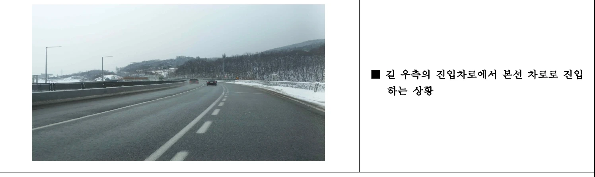

726. Hai câu nào là giải thích đúng về chuyển làn đường trong tình huống sau?

- ①Xe ô tô con đang đi trên làn đường số 2 có thể chuyển sang làn đường số 1.
- ②Xe ô tô con đang đi trên làn đường số 1 không thể chuyển sang làn đường số 2.
- ③Có thể chuyển sang làn đường số 1 ngay từ làn đường tiến vào.
- ④Xe ô tô con đang đi trên làn đường số 2 không thể chuyển làn đường bằng làn đường tiến vào.
- ⑤Có thể chuyển làn đường từ tất cả các làn đường.
Xem đáp án
Đáp án
② Xe ô tô con đang đi trên làn đường số 1 không thể chuyển sang làn đường số 2.
④ Xe ô tô con đang đi trên làn đường số 2 không thể chuyển làn đường bằng làn đường tiến vào.
Căn cứ
Người điều khiển ô tô, ngựa không được chuyển hướng của ô tô, ngựa ở những nơi có biển báo an toàn và đặc biệt nghiêm cấm việc chuyển hướng. Tuy nhiên, điều này không áp dụng nếu có chướng ngại vật do đường bị hư hỏng hoặc công trình đường bộ (Điều 14, Khoản 5 Luật Giao thông đường bộ). Bạn có thể chuyển làn ở phần vạch chấm trắng nhưng không được chuyển làn ở phần vạch liền màu trắng. Ngoài ra, ngay cả khi có đường nét đứt đôi và nét liền, bạn chỉ có thể chuyển làn ở phía có đường chấm.
Phần căn cứ là bản dịch máy để tham khảo.